교육 현장 갤러리
CNP 아카데미의 뜨거웠던 열기와 생생한 기록들을 확인해보세요.
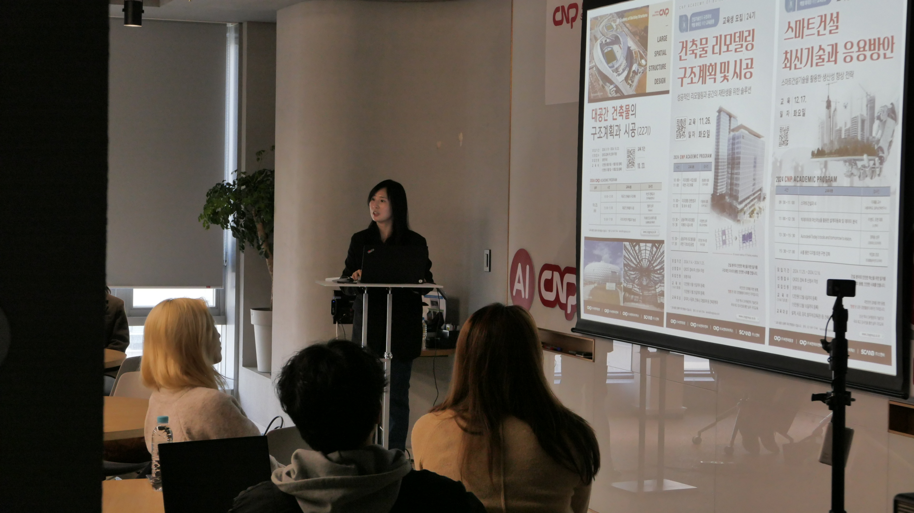
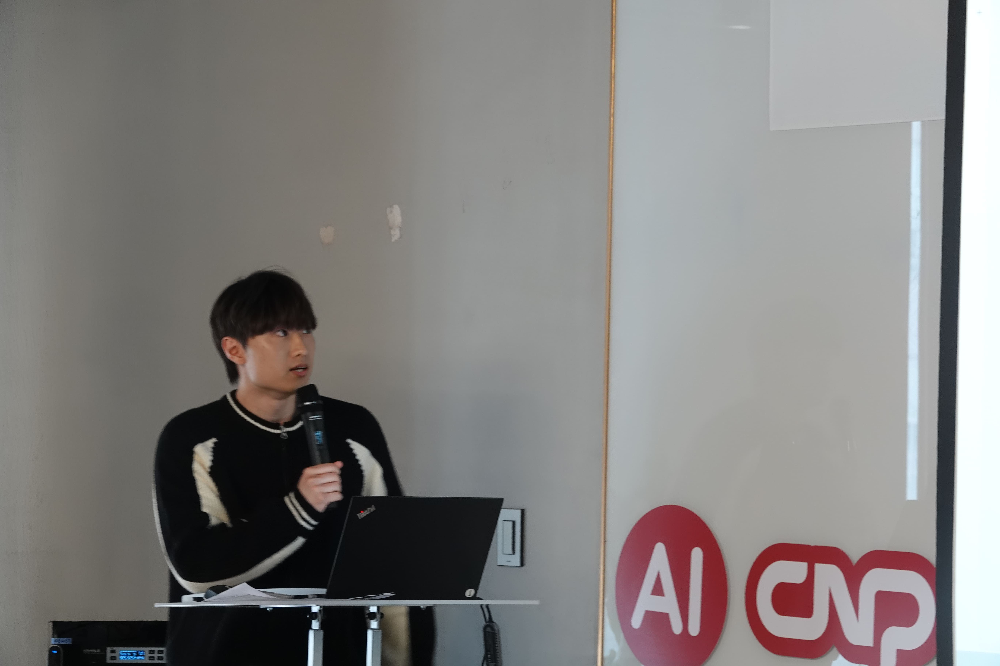
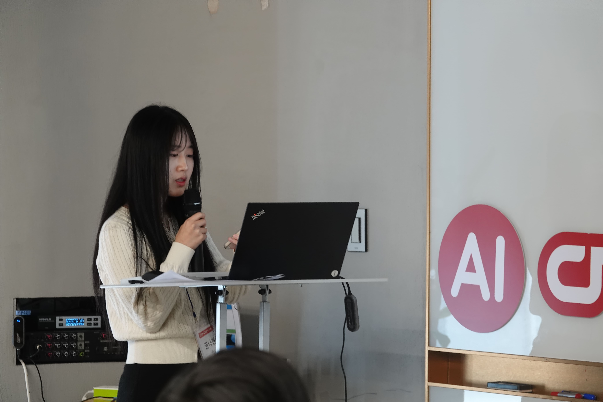

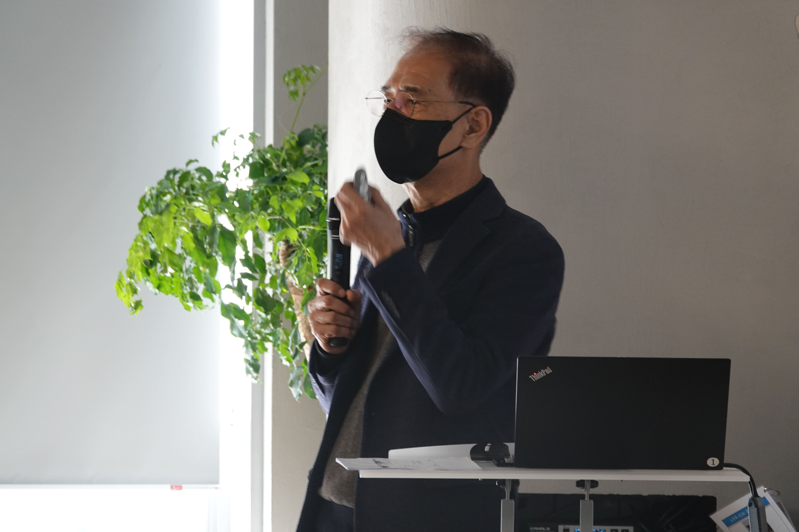
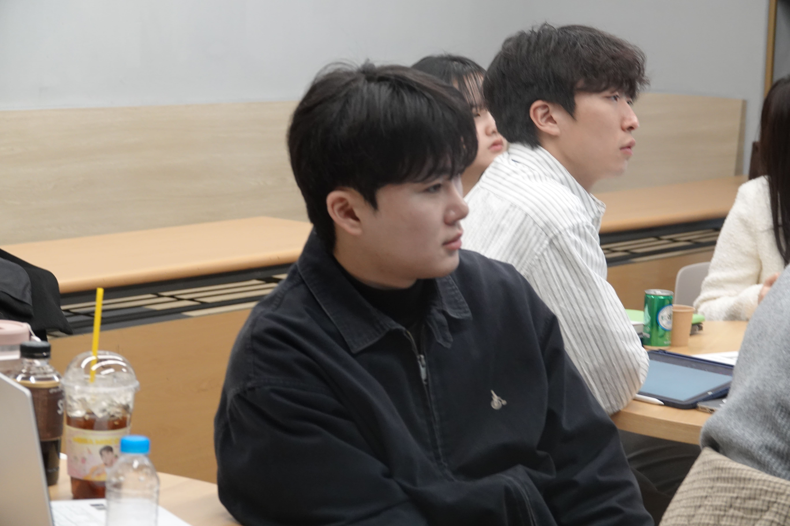
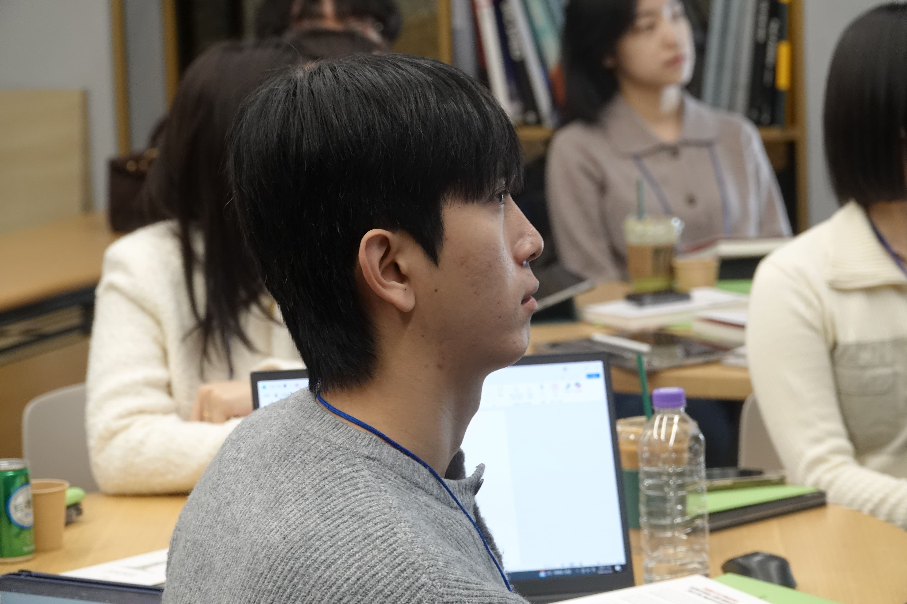
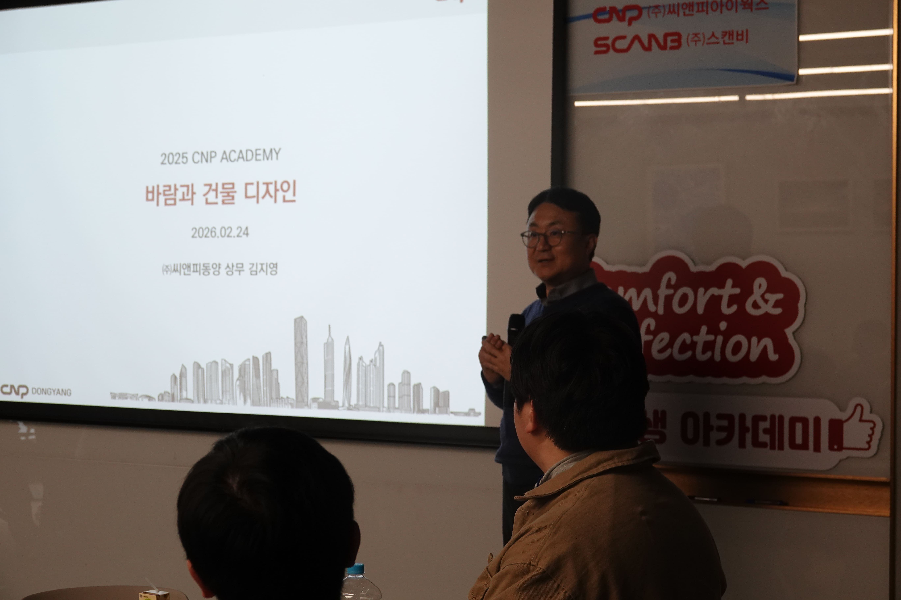

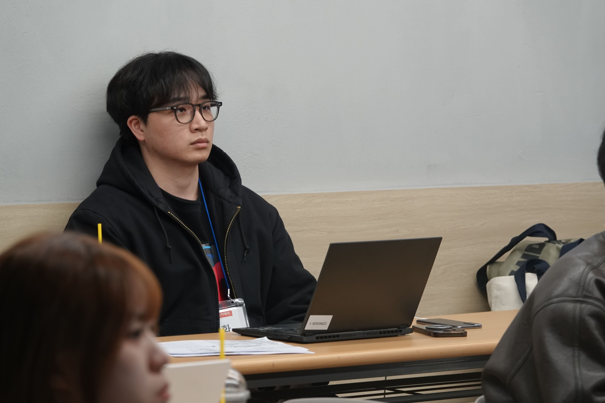
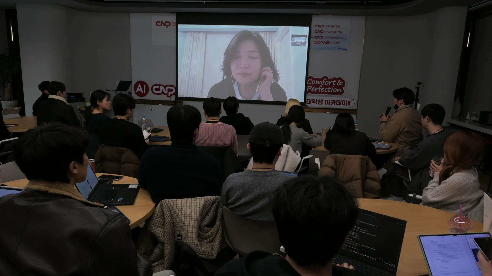

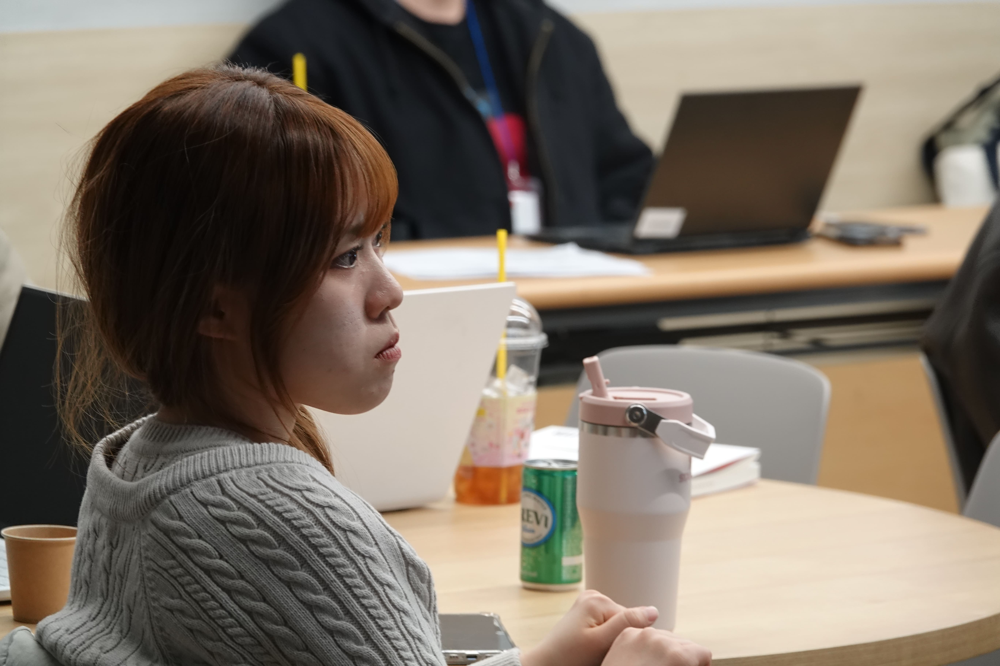


건축공학도들에게 더 넓은 시야를 제공한 CNP 아카데미.
참가자들의 생생한 피드백과 만족도 통계를 통해 이번 아카데미의 성과를 되돌아봅니다.
아카데미의 취지, 규모, 그리고 조별 활동에 대한 참가자 평가입니다.
"구조설계 실무와 넓은 시야를 제공했다는 점에서 완벽히 부합했습니다."
"약 30명의 인원은 활동하고 친해지기에 매우 적절한 규모였습니다."
"타 학교 학생들과 섞여 네트워킹을 할 수 있어 훌륭했습니다."
참가자들이 직접 꼽은 아카데미의 하이라이트와 CNP 아카데미를 향해 남겨주신 진심 어린 코멘트입니다.
"졸업 이후 가지고 있었던 건축업계에서의 진로 분야들에 대해 깊이 이해할 수 있었고, 훌륭하신 선배님들의 강연으로 지식을 쌓는 귀중한 시간이었습니다."
"다양한 학교에서 같은 꿈을 꾸며 노력하는 여러 친구들과 만나서 서로 의견을 나누고 친해질 수 있는 장이 마련되어 정말 좋았습니다."
"전혀 아쉬운 점이 없습니다! 다음에 또 참여하고 싶어요 ㅎㅎ 뜻깊은 시간과 좋은 자리 만들어 주셔서 정말 감사합니다."
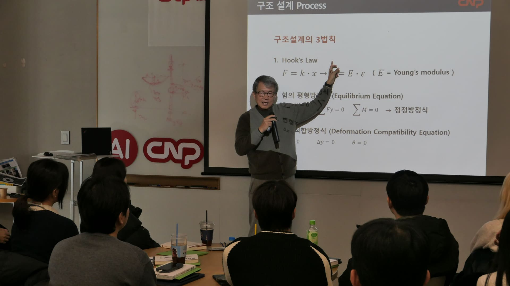
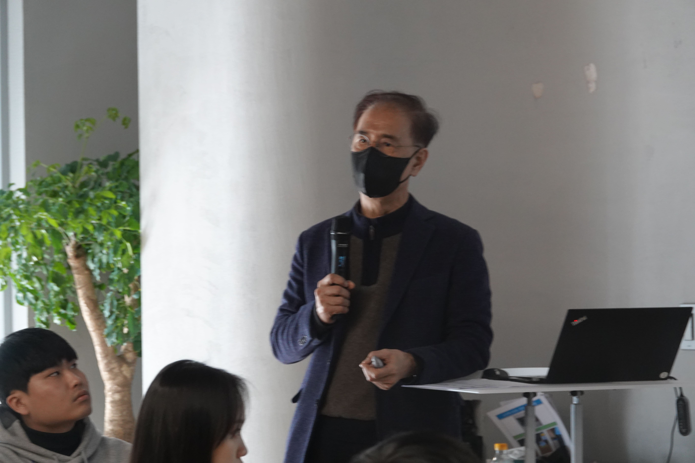
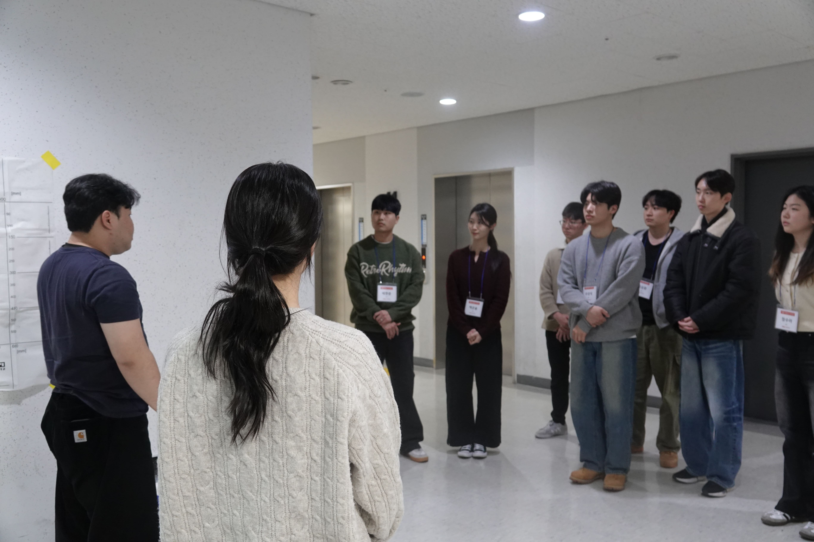
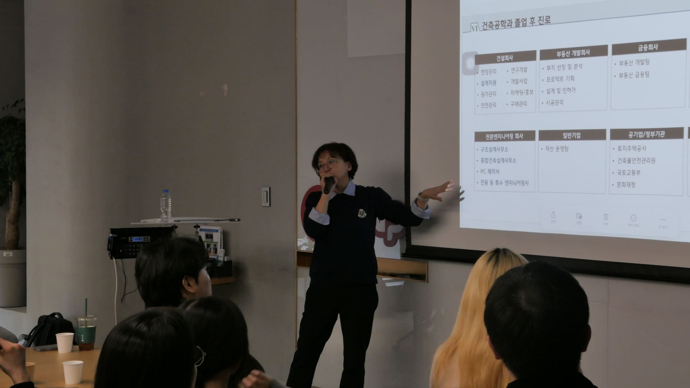
아카데미를 통해 얻은 경험과 소중한 의견들입니다.
"다양한 정보를 정말 훌륭하신 선배님들의 강연으로 습득할 수 있어서 매우 귀중한 시간이었습니다."
"구조설계에 대한 전반적인 실무환경과 업무영역 등 건축공학도들에게 더 넓은 시야를 제공해주었습니다."
"학교 밖에서 타 대학 학생들과 섞여 시야를 넓히고 네트워킹할 수 있었던 점이 이번 아카데미의 큰 수확이었습니다."
"약 30명의 인원과 6개 조 구성이 매우 적절해서, 서로 깊이 있게 대화하고 의견을 나누기에 완벽한 규모였습니다."
"구조 외에도 BIM, 3D 스캐닝, AI 등 건축업계 속 다른 분야들의 전문가 세미나가 특히 인상 깊었습니다."
"4일이라는 시간이 짧게 느껴질 만큼 알찼습니다. 모두와 더 친해지기엔 일정이 타이트한 점 빼고는 완벽했어요!"
CNP 아카데미의 뜨거웠던 열기와 생생한 기록들을 확인해보세요.









